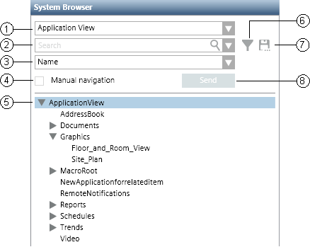

System Browser Workspace
System Browser displays objects in the management platform through various views, and also supports searching and filtering.

System Browser Workspace | ||
| Name | Description |
1 | Views List box | Allows you to select the view of the system by clicking the drop-down arrow. |
2 | Search List box | Allows you to search for objects in the currently selected view. You can perform searches on either names or descriptions but not on a combination of both names and descriptions. The box consists of an editable field where you enter search strings, including wildcards. You can perform a search by name or description, depending on the setting of the Display mode. You start a search by entering text and then either pressing ENTER or clicking the Search icon. The matching results display in the list area. The drop-down arrow displays a list of your saved searches. |
3 | Display Mode List box | Provides four options to display objects: Description, Description + Name, Name, and Name + Description. When you choose to display an object’s Description + Name, the description appears first, followed by the name. When you choose to display an object’s Name + Description, the name appears first, followed by the description. The option you select affects the way the object displays throughout the various panes in System Manager. |
4 | Manual Navigation check box | One of two methods for making objects the primary selection in System Manager. By default, automatic selection is enabled, which means that any object you select in System Browser automatically becomes the new primary selection for the system. If you want to scroll through the System Browser tree and highlight an object without making it the primary selection, check the Manual Navigation box, and then single-click the object. If you then decide that you want to make the highlighted selection the new primary selection, you can do one of the following:
|
5 | System Browser tree | Displays system objects in a hierarchy. |
6 | Filtering icon | Displays the Filtering Search area, where you can limit your search. You filter the objects by selecting individual or multiple building control disciplines, subdisciplines, types, subtypes, and aliases (which are case sensitive). Additionally, the Other drop-down list box allows you to filter for out of scan, override protection, and validation profile settings. Clicking the X in the Alias field clears only the Alias field. Clicking the Clear button clears the Discipline, Type, Other, and Alias fields. Selecting the Search within selection check box applies your filter selections only to the current node selection in the System Browser tree. Clicking the Search button starts the search and displays the results of your filter selections. |
7 | Save icon | Allows you to save a search entry for later use. Saving a search does not save the node location at the time of the save, only the filtering selections. This applies even if you select the Search within selection check box. You access saved searches by selecting the drop-down arrow in the Search list box. |
8 | Send button | The Send button works in conjunction with the Manual Navigation check box. Once you select the check box and highlight an object, click the Send button and the object becomes the new primary selection for the system. |